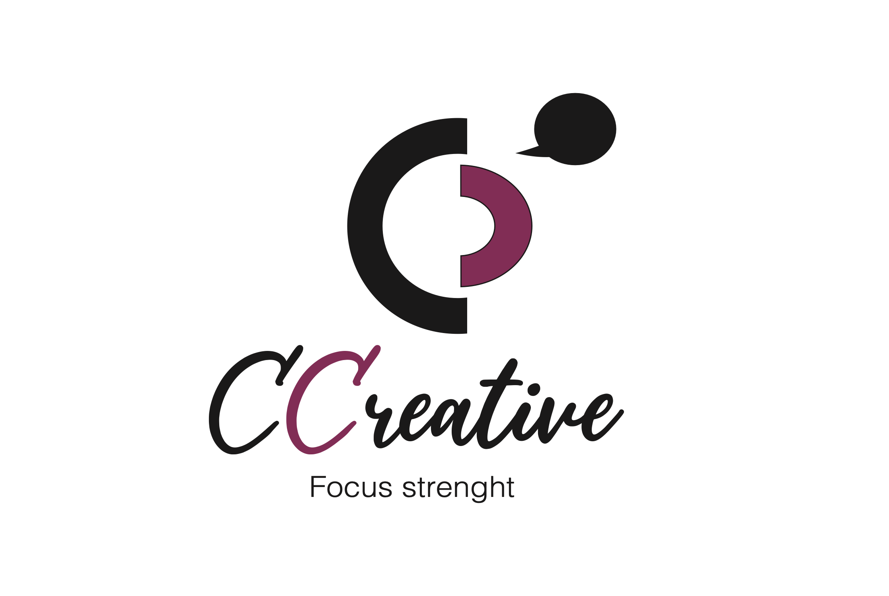
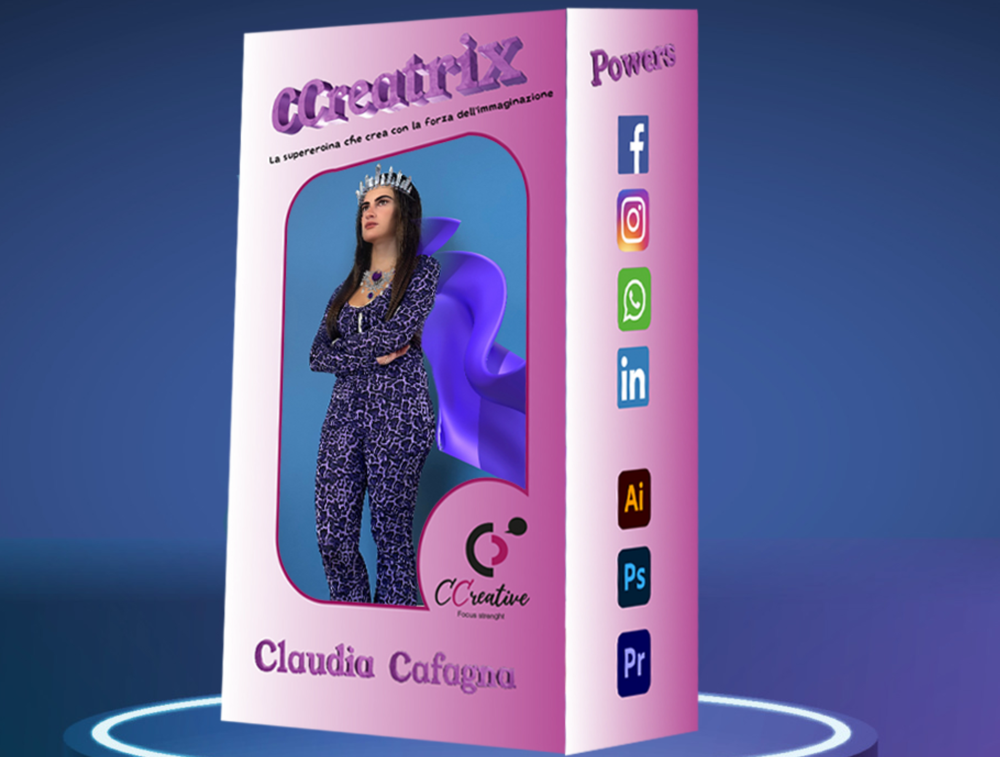

Claudia Cafagna
Email: claudiacaf92@gmail.com
Telefono: +39 3474908970
Bari, Italy
Email: claudiacaf92@gmail.com
Telefono: +39 3474908970
Bari, Italy
Competenze
Progetti
|  |  |
 |
Esperienze
Hostess, Promoter e vendita outbound
Servizio civile @ Politecnico di Bari - Ufficio Eventi
Customer care inbound commerciale Sky @ Nethex
Segretaria e accompagnatrice in agenzia viaggi
Formazione
Diploma di maturità classica
Università degli studi di Bari "Aldo Moro" - Facoltà di Scienze del Servizio Sociale
Corso per animatori per bambini con attestato di partecipazione 15 ore
ITS Apuglia Digital Maker - Corso in Digital Media Specialist
Competenze personali
Lingua madre
Altre lingue
Competenze comunicative
Competenze organizzative e gestionali